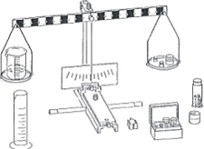

| Objetivo: |
Realizar determinaciones de masa de diferentes cuerpos, para la Comprensión del concepto de masa, realizar mediciones por
medio de una balanza de dos brazos, conocer y hacer uso las unidades de masa.
|
| |
| Introducción: |
|
La masa es la medida de la inercia de un cuerpo. Aunque es frecuente que se defina como la cantidad de materia contenida en un
cuerpo, esta última definición es incompleta. Es un concepto central en la química, la física y disciplinas afines. En el Sistema
Internacional de Unidades se mide en kilogramos.
El Kilogramo es la unidad básica de masa del Sistema Internacional de Unidades y su patrón, está definido por la masa que tiene el
cilindro patrón, compuesto de una aleación de platino e iridio, que se guarda en la Oficina Internacional de Pesos y Medidas en
Sèvres, cerca de París.
|
|
|
| Desarrollo Experimental: |
|
Preparación: Montaje de acuerdo con la ilustración.
- Insertamos a través de la perforación transversal del riel de soporte una varilla de soporte de 25 cm. Ajustamos la varilla de soporte con ayuda de un tornillo moleteado.
- Colocamos los capuchones de plástico a ambos extremos de la varilla de soporte.
- Fijamos la segunda varilla de soporte de 25 cm. perpendicularmente en el riel de soporte.
- Ajustamos la nuez a la varilla perpendicular de soporte.
- Ajustamos el brazo de palanca a la nuez en el orificio superior con ayuda del bulón de cojinetes.
- Atornillamos el índice al centro del brazo de palanca.
- Colocamos la escala sobre el riel de soporte frente a la varilla perpendicular de soporte, con ayuda del jinete con ranura.
- Suspendemos ambos platillos de balanza de los extremos del brazo de palanca.
Experimento 1:
Colocamos el vaso de precipitados sobre el platillo izquierdo de la balanza mientras que sostenemos el platillo hasta que
logremos el equilibrio colocando masas y perdigones para tarar en el platillo derecho ("tarar').
En adición, colocamos sobre el platillo de balanza derecho dos pesos de ranura 50 g.
Vertimos agua en el vaso de precipitados que se encuentra sobre el platillo de balanza izquierdo (del cilindro graduado), hasta
que establezcamos de nuevo el equilibrio.
Finalmente vertimos de nuevo el agua en el cilindro graduado vacío y determinamos su volumen. |
| Resultados y Conclusiones: |
|
1. Las masas se comparan con una balanza.
2. 1 g es la masa de 1 ml de agua, 1 kg. es la masa de 1L de agua.
|
|
|
| Figura 1: Diagrama del Material |
|  |
| |
|